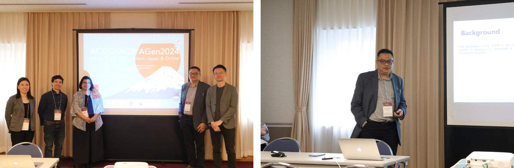
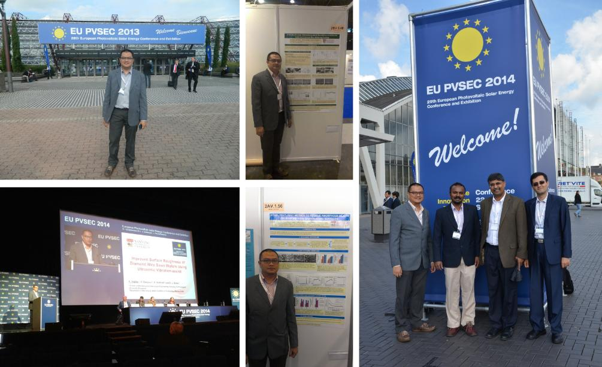
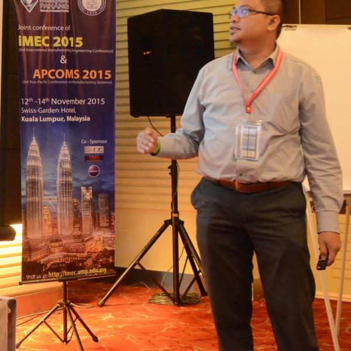
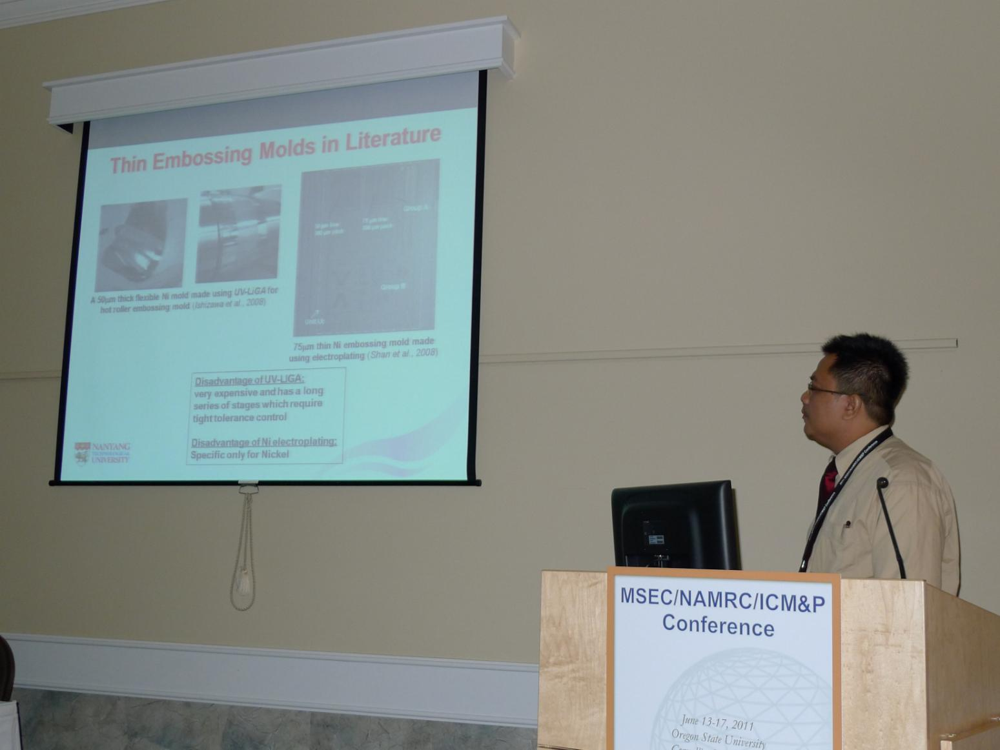
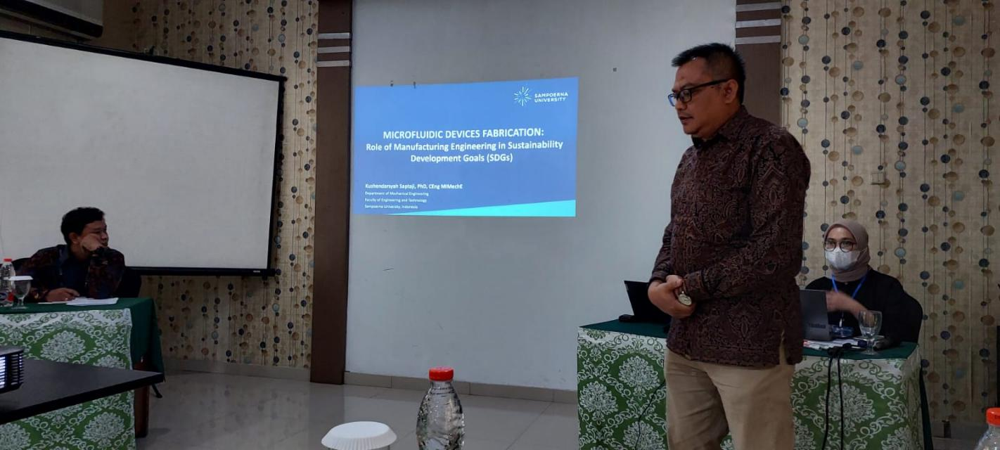

PAPERS PUBLISHED
Conference Paper
-
Asian Conference on Education & International Development
Presenting at the Asian Conference on Education & International Development (ACEID2024)(March 2024) -
European Photovoltaic Solar Energy Conference and Exhibition
Presenting at the European Photovoltaic Solar Energy Conference and Exhibition (EU PVSEC 2013, 2014) -
International Manufacturing Conference & 7th Asia Pacific Conference on Manufacturing System
Presenting at iMEC & APCOMS 2015 -
Manufacturing Science and Engineering Conference
Presenting at ASME International Manufacturing Science and Engineering Conference (MSEC) (June 2011) -
Seminar Nasional Teknik Industri (SeNTI) & Mechanical Engineering and Emerging Technologies National Conference (MEET-nConf)
Invited speaker at SeNTIxMEET 2023
- M R Ramadhani, M R Fikri, K Saptaji, “Design and experimental validation of robotic manipulator for indoor farming”, AIP Conference Proceedings, vol 3120, issue 1, 2025.
- Kushendarsyah Saptaji, Pusva Juliana, Tiara Kusuma Dewi, Muhammad Sobirin Hendriyawan Achmad, “Development of 3D scanner using laser Stripe Scanning (LSS) method”, AIP Conference Proceedings, vol 2860 issue 1, 2024.
- Fini Bestiara, Kushendarsyah Saptaji, Tiara Kusuma Dewi, Farid Triawan, Anwar Ilmar Ramadhan, Azmir Azhari, “Development of the Extrusion Based Food 3D Printer Machine by Modifying Fused Deposition Modelling (FDM) 3D Printer”, Applied Mechanics and Materials, vol. 921, 2024.
- Kushendarsyah Saptaji, Hanifatuttaqiyyah Nur Fauzah, Tiara Kusuma Dewi, Ignatius Budi Hadisujoto, Mebrahitom Asmelash Gebremariam, Mohd Azmir Azhari, “Performance analysis of gap controller using current sensor module for a small-scale electric discharge machining (EDM) machine”, AIP Conference Proceedings, vol. 2865, 2023.
- A I Ramadhan, K Saptaji, A M Sari, I B Rahardja, S Y Pedana, I Nofian, A M Dadi Saputra, Firmansyah, “Aplikasi Nanofluida Hijau untuk di Aplikasikan pada Sistem Pendingin Motor”, Prosiding Seminar Nasional Penelitian LPPM UMJ, 2023.
- Nur Aziera, Mebrahitom Asmelash, Azmir Azhari, Kushendarsyah Saptaji, “Mechanical Performance Evaluation of Al2O3-ZrO2-Ti Composite Materials”, Proceedings of the International Manufacturing Engineering Conference & The Asia Pacific Conference on Manufacturing Systems, 2023.
- Nazrin Mokhtar, Mebrahitom Asmelash, Kushendarsyah Saptaji, Azmir Azhari, “Surface Roughness Analysis on Sheet Metals During AWJ Machining Using Low Pressure”, Proceedings of the International Manufacturing Engineering Conference & The Asia Pacific Conference on Manufacturing Systems, 2023.
- Camytha Octanuryati Rochmad, Jelita Widi Rahmasanti, Desinta Dewi, Taufiq Candra, Kushendarsyah Saptaji, Ignatius Budi Hadisujoto, “Development of extrusion machine design for recycling plastic waste”, AIP Conference Proceedings, Volume 2646, Issue 1, 2023.
- Adven Simarmata, Tiara Kusuma Dewi, Muhamad Rausyan Fikri, Kushendarsyah Saptaji, “Development of autonomous robot using fuzzy inference system (FIS) for indoor ultraviolet (UV) disinfection”, AIP Conference Proceedings, Volume 2646, Issue 1, 2023.
- Desinta Dewi Ramadani, Farid Triawan, Djati Wibowo Djamari, Kushendarsyah Saptaji, Erkata Yandri, “Kinematic design of trans phalangeal prosthetic device with 1-DOF”, AIP Conference Proceedings, Volume 2646, Issue 1, 2023.
- Dara Ginanti, Farid Triawan, Kushendarsyah Saptaji, Lydia Anggraini, “The crispness of cassava crisps with random shape by compression test”, AIP Conference Proceedings, Volume 2646, Issue 1, 2023.
- Desinta Dewi Ramadani, Mohammad Bayu Nur Akbar, Putri Angelica, Kushendarsyah Saptaji, Cho Lik Chan, Farid Triawan, “A quick-release hanging hook design and 3D printing”, AIP Conference Proceedings, Volume 2646, Issue 1, 2023.
- Hutomo Aji Nuswantoro, Kushendarsyah Saptaji, Budi Hadisujoto, “A study of stabilization quanser linear inverted pendulum with MATLAB Simulink”, AIP Conference Proceedings, Volume 2646, Issue 1, 2023.
- Purbo Suwandono, Gigih Priyandono, Kushendarsyah Saptaji, Akhmad Rizal Fanani, “Effect of Hot Cylinder Materials on Gamma-Type Stirling Engine Performance Using Solar Dish Concentrator”, Proceedings of the 2nd Energy Security and Chemical Engineering Congress. Lecture Notes in Mechanical Engineering, 2022.
- Akram Mubarak, Mebrahitom Asmelash, Azmir Azhari, Tamiru Alemu, Freselam Mulubrhan, Kushendarsyah Saptaji, “Digital Twin Enabled Industry 4.0 Predictive Maintenance Under Reliability-Centered Strategy”, 2022 First International Conference on Electrical, Electronics, Information and Communication Technologies (ICEEICT), 2022.
- Amelia Nuraisyah Quinsi Jemy, Astrid Vanya Octary, Kusherdarsyah Saptaji, Tasya Diana Septiani, Sylvania Mulia Fauziyyah, Rajib Nur Mohammad, Djati Wibowo Djamari, “Design and Modeling of Shredding Machine for Recycling Plastic Waste”, 2021 IEEE 7th International Conference on Computing, Engineering and Design (ICCED), 2021.
- K Saptaji, M Faizul, A Fakhri, “Construction of low-cost 3D scanner using triangulation and Screened Poisson Surface Reconstruction techniques”, IOP Conference Series: Materials Science and Engineering, Volume 1098, Issue 6 (2021).
- MA Rahma, A Satrial, K Saptaji, M Asmelash, “Surface quality improvement of milled Aluminum-6061 using magnetic abrasive deburring”, IOP Conference Series: Materials Science and Engineering, Volume 1098, Issue 6 (2021).
- FN Azmi, K Saptaji, MR Fikri, “Construction of vibration monitoring system based on Wireless Sensor Network (WSN) for machining process”, IOP Conference Series: Materials Science and Engineering, Volume 1098, Issue 6 (2021).
- AJ Octarina, K Saptaji, T Kurniawan, “Optimization of relative density to geometric parameter ratio for honeycomb structure using Finite Element Analysis”, IOP Conference Series: Materials Science and Engineering, Volume 1098, Issue 6 (2021).
- N Fatchurrohman, N N N N Hamdan, M A Gebremariam, K Saptaji, “Investigation on the Effect of Build Orientation and Heat Treatment on Tensile Strength and Fracture Mechanism of FDM 3D Printed PLA”, Proceedings of the International Manufacturing Engineering Conference & The Asia Pacific Conference on Manufacturing Systems, iMEC-APCOMS 2019: iMEC-APCOMS 2019 pp 461-465.
- M A Anwar, A K Zainal, T Kurniawan, Y P Asmara, W S W Harun, G Priyadonko and K Saptaji, “Electrochemical Exfoliation of Pencil Graphite Core by Salt Electrolyte”, IOP Conference Series: Materials Science and Engineering, 469 (1), 12105 (2019).
- Tong Keong Sai, Kushendarsyah Saptaji, Mebrahitom Asmelash Gebremariam and Nanang Fatchurrohman, “Study on End Brush Deburring and Sintered Diamond Ball Deburring of Micro-features Milled”, IOP Conference Series: Materials Science and Engineering, 530, (2019) 012025 Presented in International Conference on Recent Advances in Industrial Engineering and Manufacturing (ICRAIEM) 2018, Penang, Malaysia (Highly Commended Award).
- Muhamad Izdhar Bin Zaki, Kushendarsyah Saptaji, Tedi Kurniawan and Raden Dadan Ramdan, “Fabrication of Micro Dimples Pattern Using Ball End Mill”, 1st International Conference on Design and Application of Engineering Materials (IC-DAEM) 2018, Bandung, Indonesia.
- K. Saptaji and S. Subbiah, “Burr Reduction of Micro-milled Microfluidic Channels Mould Using a Tapered Tool”, Advances in Materials and Processing Technologies (AMPT) 2016, Kuala Lumpur, Malaysia. Published in Procedia Engineering, Vol. 184, 2017, 137 - 144.
- Kushendarsyah Saptaji, “Micro-Milling of Thin Mould for Continuous Productions of Polymer Microfluidic Devices”, ARPN Journal of Engineering and Applied Science Vol. 11 (24), 2016 Presented in 5th International Conference on Production, Energy and Reliability 2016, Kuala Lumpur, Malaysia. (Best Paper Award Winners).
- Kushendarsyah Saptaji and Sathyan Subbiah, “Finite Element Study of the Effect of Substrate Properties in Micro-cutting Thin Workpiece Materials”, IOP Conference Series: Materials Science and Engineering, 114(1), 12005 (2016).
- K. Saptaji, H. Zarepour and S. Subbiah, “Improved Surface Roughness of Diamond Wire Sawn Wafers Using Ultrasonic Vibration-Assist”, Proceeding of 29th European PV Solar Energy Conference (EU-PVSEC), September 22-26, 2014, Amsterdam, The Netherlands.
- G.R. Srinivas, K. Saptaji, S. Subbiah and H. Zarepour, “Novel Texturing Method to Remove Amorphous Silicon on Diamond Wire Sawn Wafers Surfaces”, Proceedings of 29th European PV Solar Energy Conference (EU-PVSEC), September 22-26, 2014, Amsterdam, The Netherlands.
- H. Zarepour, K. Saptaji and S. Subbiah, “Novel diamond-slurry wire sawing process for silicon wafering”, Proceedings of 29th European PV Solar Energy Conference (EU-PVSEC), September 22-26, 2014, Amsterdam, The Netherlands.
- K. Saptaji, S. Subbiah and H. Zarepour, “A Study of Linear Vibration-Assisted Scratching on Silicon to Improve Diamond Wire Wafering Process”, Proceedings of 28th European PV Solar Energy Conference (EU-PVSEC), September 30-October 4, 2013, Paris, France.
- M. Umer, K. Saptaji and S. Subbiah, 2012, “Study of Pressure Distribution in Compliant Coated Abrasive Tools for Robotic Polishing”, Proceedings of 2012, ASME International Manufacturing Science and Engineering Conference (MSEC), June 4-8, 2012, Notre Dame, Indiana, USA.
- Kushendarsyah Saptaji and Sathyan Subbiah, 2011, “Orthogonal Cutting Study of the Micro-cutting Thin Workpiece”, Proceedings of 2011, ASME International Manufacturing Science and Engineering Conference (MSEC) Volume 2, June 13-17, 2011, Corvallis, Oregon, USA.
- K. Saptaji and S. Subbiah, 2010, “Challenges in Precision Machining of Thin Substrate”, 13th International Conference on Precision Engineering (ICoPE), 2010, Singapore.
- K. Saptaji and S. Subbiah, 2009, “Burr Removal in Micro-milling Aluminum Alloys”, Symposium T, 5th International Conference on Materials for Advanced Technologies (ICMAT) 2009, Singapore.
Full Reviewed Paper
- Nuraini Lusi, Mebrahitom Gebremariam, Abdur-Rasheed Alao, Kushendarsyah Saptaji, Azmir Azhari, “Investigation of the Wear Progression of Nozzle in Abrasive Waterjet Machining with Different Abrasive Material”, Manufacturing Technology, vol. 25, issue 1, page 76-85, 28 March 2025 (SJR 2024 0.37).
- Amartya Natayu, Iwan Setiawan, Murni Handayani, Yuli Panca Asmara, Kushendarsyah Saptaji, “Optimization of stereolithography 3D printed photopolymer using halloysite nanotubes reinforcement for hot embossing master mold application”, Progress in Additive Manufacturing, page 1-17, 12 March 2025 (SJR 2024 0.99).
- Kushendarsyah Saptaji, Ryan Antonio Wijaya, Octarina Adiati Juniasih, “Optimizing 4D-printed grippers: the role of finger design and thermal stimulus”, Progress in Additive Manufacturing, page 1-14, 24 January 2025 (SJR 2024 0.99).
- Kushendarsyah Saptaji, Camytha Octanuryati Rochmad, Octarina Adiati Juniasih, Gagus Ketut Sunnardianto, Farid Triawan, Anwar Ilmar Ramadhan, Azmir Azhari, “Enhancing shape-recovery ratio of 4D printed polylactic acid (PLA) structures through processing parameter optimization”, Progress in Additive Manufacturing, vol. 9 issue 6, pages 1869-1881, December 2024 (SJR 2024 0.99).
- Farid Triawan, Arya Smara Dyota, Fatima Tasya Kamila, Kushendarsyah Saptaji, Nikolas Krisma Hadi Fernandez, Arridina Susan Silitonga, Abdi Hanra Sebayang, “A quad-cliff mechanism for eco-printing by pounding technique: design, manufacturing, and testing”, Jurnal Polimesin, vol. 22 issue 5, 2024.
- Hafiz Husin, Mohd Nazir Mat Nawi, MA Gebremariam, Kushendarsyah Saptaji, Azmir Azhari, “Experimental Investigation on the Effect of Masked Multiple Passes Abrasive Waterjet Machining Surface Texturing on Coefficient of Friction”, Journal of Advanced Research in Applied Mechanics, vol. 126 issue 1, 2024 (SJR 2024 0.17).
- Kushendarsyah Saptaji, Ifat Ifat, Indra Pertama Putra, Ikramin Kalam, Sri Susilawati Islam, Farid Triawan, Nathanael Ansel Siswojo, Steven Abed Daniel Lubis, Jonathan Bryan, Nadya Geraldine Handani, “Preserving Betawi Culture: Introducing Additive Manufacturing for Ondel-Ondel Souvenirs in Micro, Small, and Medium Enterprises (MSMEs/UMKM)”, Journal of Community Services: Sustainability and Empowerment, vol. 4 issue 1, 2024.
- Kushendarsyah Saptaji, Dinda Arina Manasikana, Octarina Adiati Juniasih, Mochammad Rafli Ramadhani, Muchamad Oktaviandri, Anwar Ilmar Ramadhan, Yuli Panca Asmara, “Improvement of ankle foot orthotics fabrication using 3D printing method”, Sinergi, vol 28 issue 3, 2024 (SJR 2024 0.19).
- Mohd Nazir Mat Nawi, Hafiz Husin, Mebrahitom Asmelash Gebremariam, Kushendarsyah Saptaji, Azmir Azhari, “Investigation on Optimum Waterjet Cleaning Parameters for Minimum Surface Impact during Paint Removal from Mild Steel”, Journal of Advanced Research in Fluid Mechanics and Thermal Sciences, vol 120 issue 2, 2024 (SJR 2024 0.28).
- K Saptaji, MA Octaviani, M Yetti, B Hadisujoto, OA Juniasih, A Azhari, “Structural Analysis of a Mini Three-Axis CNC Micro-Milling Machine With Horizontal Spindle Configuration”, Journal of Advanced Manufacturing Technology, vol 18, issue 2, 2024 (SJR 2024 0.18).
- Anwar Ilmar Ramadhan, Kushendarsyah Saptaji, Tri Yuni Hendrawati, Alvika Meta Sari, Efrizon Umar, Azmairit Aziz, Rifqi Putra Semendo, Hanif Rama Yuda Setiawan, Firmansyah Firmansyah, “Investigation of Thermal Conductivity and Dynamics Viscosity of Green Nanofluids (ZrO2-SiO2)”, Jurnal Teknologi, vol 16 issue 2, 2024.
- Fini Bestiara, Kushendarsyah Saptaji, Tiara Kusuma Dewi, Farid Triawan, Anwar Ilmar Ramadhan, Azmir Azhari, “Development of the Extrusion Based Food 3D Printer Machine by Modifying Fused Deposition Modelling (FDM) 3D Printer”, Applied Mechanics and Materials, vol. 921, 2024.
- Ashton Bradley Hendrawan, Marvel Mahadi Setiawidjaja, Ramses Maur Ragaventrand Aiboy, Kushendarsyah Saptaji, Farid Triawan, “Prototype of Eco-Pounding Machine with Snail-Disc Mechanism and Electric Motor Drive”, Jurnal Teknik Mesin dan Mekatronika (Journal of Mechanical Engineering and Mechatronics), vol 9 issue 1, 2024.
- Wan Noor Hin Mior Sani, Ramadhansyah Putra Jaya, Khairil Azman Masri, Kushendarsyah Saptaji, Anmar Dulaimi, “Exploring the chemical properties and microstructural characterisations of hybrid asphalt binders for enhanced performance”, Discover Applied Science, vol. 6 issue 4, 2024 (SJR 2024 0.54).
- Kushendarsyah Saptaji, Asriyanti, Nisa Khoiriyah, Laely Muryanti, Iwan Setiawan, “Review of the Potential use of Poly (lactic-co-glycolic acid) as Scaffolds in Bone Tissue Recovery”, Makara Journal of Science, vol. 28 issue 1, 2024 (SJR 2024 0.29).
- Budi Hadisujoto, Ariq Naufal Rabbani, Kushendarsyah Saptaji, Nikolas Krisma Fernandez, Djati Wibowo, “Development of 3D Printed Autonomous Warehouse Robot Using Mecanum Wheel and Robot Arm”, Journal of Applied Sciences and Advanced Technology, vol. 6 issue 2, 2024.
- Tiara Kusuma Dewi, Kushendarsyah Saptaji, Adven Simarmata, Muhamad Rausyan Fikri, “Implementation of convolutional neural network (CNN) algorithm for autonomous robot”, Journal of Mechanical Engineering (JMechE), vol. 21 issue 2, 2024 (SJR 2024 0.2).
- Safety Husna Pangestika, Kushendarsyah Saptaji, Anak Agung Ngurah Perwira Redi, Asep Bayu Dani Nandiyanto, Surya Danusaputro Liman, Farid Triawan, “Utilization of plastic waste to improve properties of road material: A Review”, Mechanical Engineering for Society and Industry, vol 3 issue 3, 2023 (SJR 2024 0.3).
- Anwar Ilmar Ramadhan, Alvika Meta Sari, Kushendarsyah Saptaji, Istianto Budhi Rahardja, Efrizon Umar, Satrio Yudho Perdana, Wan Hamzah Azmi, “Characterization and Stability of ZrO2-SiO2 Nanofluids from Local Minerals Indonesia as Green Nanofluids to Application Radiator Cooling System”, Journal of Advanced Research in Fluid Mechanics and Thermal Sciences, vol 111, issue 2, 2023 (SJR 2024 0.28).
- Kushendarsyah Saptaji, Alvika Meta Sari, Anwar Ilmar Ramadhan, Istianto Budhi Rahardja, Muhammad Dadi Saputra, Firmansyah Firmansyah, Efrizon Umar, “Studi Pengembangan Nanofluida Hijau Berasal Dari Bahan Lokal Alam Untuk Aplikasi Di Bidang Teknik”, Jurnal Teknologi, Volume 15, Issue 2 (2023).
- Arya Smara Dyota, Fatima Tasya Kamila, Kushendarsyah Saptaji, Muhamad Rausyan Fikri, Ignatius Budi Sutanto Hadisujoto, Iwan Setiawan, Anwar Ilmar Ramadhan, “Pengembangan Alat Cetakan Kue Akar Kelapa Otomatis untuk Pelaku Usaha Mikro Kecil dan Menengah (UMKM)”, Jurnal Pengabdian Masyarakat Teknik, Volume 5, Issue 2 (2023).
- Rhainna Rheizkhira Reflin, Steven Henderson Chang, Kushendarsyah Saptaji, Farid Triawan, “Mechanical Design and Analysis of Eco-Print Textile Pounding Machine”, ASEAN Journal for Science and Engineering in Materials, Volume 2, Issue 2 (2023).
- Amelia Nuraisyah Quinsi Jemy, Kushendarsyah Saptaji, Farid Triawan, I Ifat, Iwan Setiawan, “Fabrication of Chemotaxis Microfluidic Device Mould Using Digital Light Processing 3D Printing Method”, Key Engineering Materials, Volume 948, (2023).
- Asriyanti, Kushendarsyah Saptaji, Nisa Khoiriyah, Muhammad Satrio Utomo, Made Subekti Dwijaya, Muhammad Hanif Nadhif, Farid Triawan, “Fabrication of Rigid Polyurethane Foam Lumbar Spine Model for Surgical Training using Indirect Additive Manufacturing”, International Journal of Technology, Volume 13, No 8 (2022) (SJR 2024 0.35).
- Indra Pertama Putra, Ifat, Kushendarsyah Saptaji, Aditiya Harjon, Yheni Mulyaningsih, “The Implementation of Online Practicum Classes During the Covid-19 Pandemic at Sampoerna University”, Journal of Science and Applied Engineering (JSAE), Volume 5, No 2 (2022).
- Kushendarsyah Saptaji, Dindamilenia Choirunnisa Hardiyasanti, Muchammad Fachrizal Ali, Raffy Frandito, Tiara Kusuma Dewi, “Potential Applications of Hydroxyapatite-Mineralized-Collagen Composites as Bone Structure Regeneration: a Review”, Journal of Science and Applied Engineering (JSAE), Volume 5, No 1 (2022).
- Muhamad Rausyan Fikri, Kushendarsyah Saptaji, Fijai Naja Azmi, “Wireless Vibration Monitoring System for Milling Process and Analysis of the Influence of Processing Parameters”, Journal of ICT Research and Applications, Volume 16, Issue 1 (2022) (SJR 2024 0.22).
- Syed Qutaba, Mebrahitom Asmelash, Kushendarsyah Saptaji, Azmir Azhari, “A review on peening processes and its effect on surfaces”, International Journal of Advanced Manufacturing Technology, Volume 120 (2022) (SJR 2024 0.71).
- Ho Yi Ting, Mebrahitom Asmelash, Azmir Azhari, Tamiru Alemu, Kushendarsyah Saptaji, “Prediction of surface roughness of titanium alloy in abrasive waterjet machining process”, International Journal on Interactive Design and Manufacturing (IJIDeM), Volume 16 (2022) (SJR 2024 0.49).
- Kushendarsyah Saptaji, Arnaz Asa Sholeh, Gigih Priyandoko, Ignatius Budi Hadisujoto, “Development of Electric Discharge Machining (EDM)Using Solenoid Actuator for Educational Purpose”, Sinergi, Volume 25, Issue 3 (2021) (SJR 2024 0.19).
- Kushendarsyah Saptaji, Nurlaely Rohmatul Iza, Sinta Widianingrum, Vania Katherine Mulia, Iwan Setiawan, “Poly(2-Hydroxyethyl Methacrylate) Hydrogels for Contact Lens Applications-A Review”, Makara Journal of Science, Volume 25, Issue 3 (2021) (SJR 2024 0.29).
- Farid Triawan, Gloria Ellysian Aprilia, Kushendarsyah Saptaji, Ramadhona Saville, Asep Bayu Dani Nandiyanto, “Determining Crispness Level of Dry Food through Its Compressive Strain Energy”, Indonesian Journal of Computing, Engineering and Design (IJoCED), Volume 3, Issue 2 (2021).
- Yuli Panca Asmara, Tedi Kurniawan, Kushendarsyah Saptaji, “Corrosion Rate of Carbon Steel A106 Gr B in Amine-CO2 Contained Solutions”, Indonesian Journal of Computing, Engineering and Design (IJoCED), Volume 3, Issue 1 (2021).
- Kushendarsyah Saptaji, Farid Triawan, Tong Keong Sai, Mebrahitom Asmelash, “Deburring Method of Aluminum Mould Produced by Milling Process for Microfluidic Device Fabrication”, Indonesian Journal of Science and Technology (IJoST), Volume 6, Issue 1 (2021) (SJR 2024 0.85).
- K Saptaji, S N Afiqah, R D Ramdan, “A Review on Measurement Methods for Machining Induced Residual Stress”, Indonesian Journal of Computing, Engineering and Design (IJoCED), Volume 1, Issue 2, Pages 106-120 (2019).
- K Saptaji, M A Gebremariam and M A Azhari, “Machining of Biocompatible Materials: A Review”, The International Journal of Advanced Manufacturing Technology, pp. 1-38, ISSN 1433-3015, https://doi.org/10.1007/s00170-018-1973-2 (2018) (SJR 2024 0.71).
- M. Prosser, M. Johnson, and K. Saptaji, “Sustainable Bauxite Mining Guidelines”, Journal of Malaysian Critical Metals, 2. pp. 1-5. ISSN 0128-2557 (2017).
- Kushendarsyah Saptaji and Sathyan Subbiah, “Orthogonal Micro-cutting of Thin Workpieces”, ASME Journal of Manufacturing Science and Engineering, 135(3), 031004 (May 24, 2013) (SJR 2024 0.7).
- Kushendarsyah Saptaji, Sathyan Subbiah and Jaspreet Singh Duphia, “Effect of Side Edge Angle and Effective Rake Angle on Top Burrs in Micro-Milling”, Precision Engineering, 36 (2012) 444-450 (SJR 2024 0.87).
- Kushendarsyah Saptaji and Sathyan Subbiah, 2010, “Microstructural changes during precision machining of thin substrates”, Key Engineering Materials, Vol. 447-448, pp. 76.
Book and Book Chapter
- Kushendarsyah Saptaji, Nikolas Krisma Hadi Fernandez, Azhari Tumada, Octarina Adiati Juniasih, Rhainna Rheizkhira Reflin, Mochammad Rafli Ramadhani, “Menelaah Permainan Tradisional Indonesia dengan Konsep Fisika”, ISBN: 978-623-261-832-9, 2024.
- Purbo Suwandono, Gigih Priyandono, Kushendarsyah Saptaji, Akhmad Rizal Fanani, “Effect of Hot Cylinder Materials on Gamma-Type Stirling Engine Performance Using Solar Dish Concentrator”, in Lecture Notes in Mechanical Engineering, Proceedings of the 2nd Energy Security and Chemical Engineering Congress, SpringerLink, 2022.
- K Saptaji, MA Prayogo, HN Fauzah, LA Nugroho, CL Chan, F Triawan, “Optimization of Quick Release Hanging Hook Design and Fabrication Using 3D Printing”, in Lecture Notes in Mechanical Engineering, Enabling Industry 4.0 through Advances in Manufacturing and Materials, SpringerLink, 2022.
- F Triawan, MD Renaldi, F Endrasari, TK Dewi, K Saptaji, “Child Safety Seat for Motorcycle Usage: A Primary Design and Strength Analysis”, Recent Trends in Manufacturing and Materials Towards Industry 4.0 Pages 777-789 (2021).
- Kushendarsyah Saptaji, “Mechanical Micro-machining”, in Handbook of Manufacturing Engineering and Technology, Edited by Andrew Yeh-Ching Nee, Springer-Verlag, 2015.
Academic Activities and Research Participation
- Vice editor for Indonesian Journal of Computing, Engineering and Design (IJoCED), September 2019 - now.
- Coordinator of Mechanical Engineering Program Study Accreditation preparation, January 2022 - March 2023.
- Reviewer of Trends in Sciences (TiS), December 2022.
- Reviewer of EPI International Journal of Engineering (EPI-IJE), Volume 4, Number 2, August 2021.
- Moderator and Reviewer for the 6th Annual Applied Science and Engineering Conference (AASEC) 2021, 18 - 19 August 2021.
- Reviewer for the 7th International Conference on Computing, Engineering and Design (ICCED) 2021, 5 - 6 August 2021.
- Speaker in the event: Summer Bootcamp 2021 (for high school students), Skill Set for 21st Century, Instructor (Topic: 3D Printing: Additive Manufacturing process in industrial revolution 4.0), Sampoerna University, 6 - 9 July 2021.
- Invited Speaker in the event: Potential of E-waste Mining in Indonesia and Determination of Related Technology and the Availability of the Potential of Local Industries (Case Studies in the City of Bandung and Tasikmalaya and Sumedang Regency), August - November 2020.
- Invited Speaker at UNTIRTA Online Seminar Series #5 on Metallurgy and Materials Topics/Research, October 2020.
- Reviewer for the 5th Annual Applied Science and Engineering Conference (AASEC) 2020, April 2020.
- Committee member for Self-Assessment Report (SAR) 2017 Accreditation Audit Faculty Manufacturing Engineering, Universiti Malaysia Pahang, Malaysia.
- Committee member for Curriculum review on Teaching Plan and Course Assessment Review, Faculty Manufacturing Engineering, Universiti Malaysia Pahang, Malaysia, 2015.
- Course File Coordinator for Manufacturing Program, Faculty of Manufacturing Engineering, Universiti Malaysia Pahang, Malaysia, 20 October 2015 - 19 October 2017.
- Editorial advisory board for My Critical Metals Journal, 1 June 2017 - 31 May 2019.
- Reviewer for the 6th Asia International Conference for Tribology 2018.
- International Advisor for the 1st International Conference on Design and Application of Engineering Materials (IC-DAEM) 2018.
- Reviewer for the 2nd International Manufacturing Engineering Conference (iMEC) 2015.